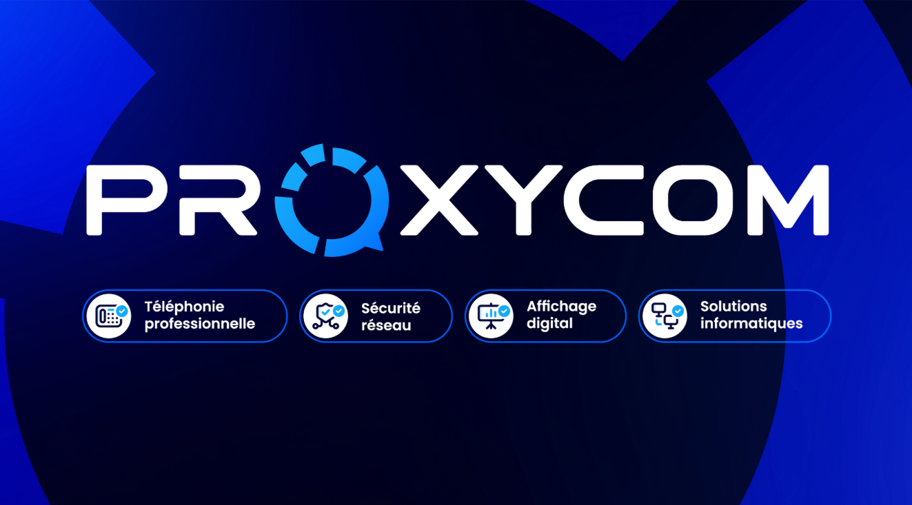

Alternant technicien réseau – Proxycom
En alternance pour ma 2e année de BTS SIO SISR, j'interviens au quotidien sur des missions variées : déploiement d'équipements, diagnostic réseau, câblage, téléphonie IP et support client. Je travaille en autonomie ou en binôme, directement sur site chez les clients de l'entreprise.
Interventions terrain & diagnostic
- Client Atherme – Remise en service d'un écran d'affichage dynamique équipé de la plateforme Touchify. Après une désynchronisation causée par le client, j'ai réalisé le diagnostic, la réinitialisation, la réinstallation complète et la resynchronisation sur site.
- Boucherie de la Motte – Remplacement d'un routeur 4G par un routeur 5G en baie de brassage, puis installation d'une solution Starlink satellite avec mon collègue pour résoudre définitivement les coupures de connectivité.
Déploiement d'équipements & affichage dynamique
- Société BRET – Salon de l'habitat – Préparation d'un totem ViewSonic avec un mini PC configuré en mode kiosque Windows pour restreindre la navigation au site de l'entreprise.
- Société Boulanger – Salon – Reproduction du même dispositif pour un autre salon professionnel.
- Société DUMONT – Installation d'un écran interactif 65 pouces, mise en réseau et mise en service pour un usage commercial immersif.
Téléphonie & câblage
- Intermarché La Vaugine – Réalisation de noyaux RJ11 pour raccorder des téléphones fixes à un FXS relié au PBX. Réalisation de noyaux RJ45 pour un interphone, puis installation et mise en réseau.
- Client Jourdain – Préparation du remplacement complet d'un parc téléphonique : configuration du PBX, d'un switch 24 ports, VLAN 12 dédié à la téléphonie, provisioning de 12 fixes et 4 sans fil.
Missions courantes
- Déploiement et configuration de routeurs, bornes Wi-Fi et équipements réseau.
- Participation au support utilisateurs et aux interventions sur site.
- Mise en place et suivi de solutions de sécurité (VPN, firewall, segmentation).
Ces missions m'ont permis de gagner en autonomie sur le terrain, de développer ma capacité de diagnostic et de renforcer mes compétences en réseau, téléphonie et relation client.